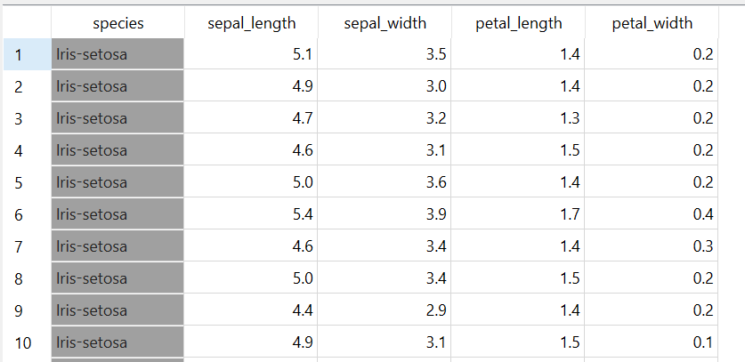
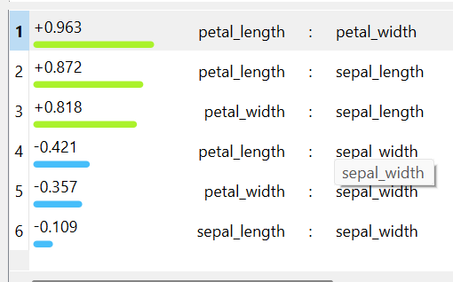
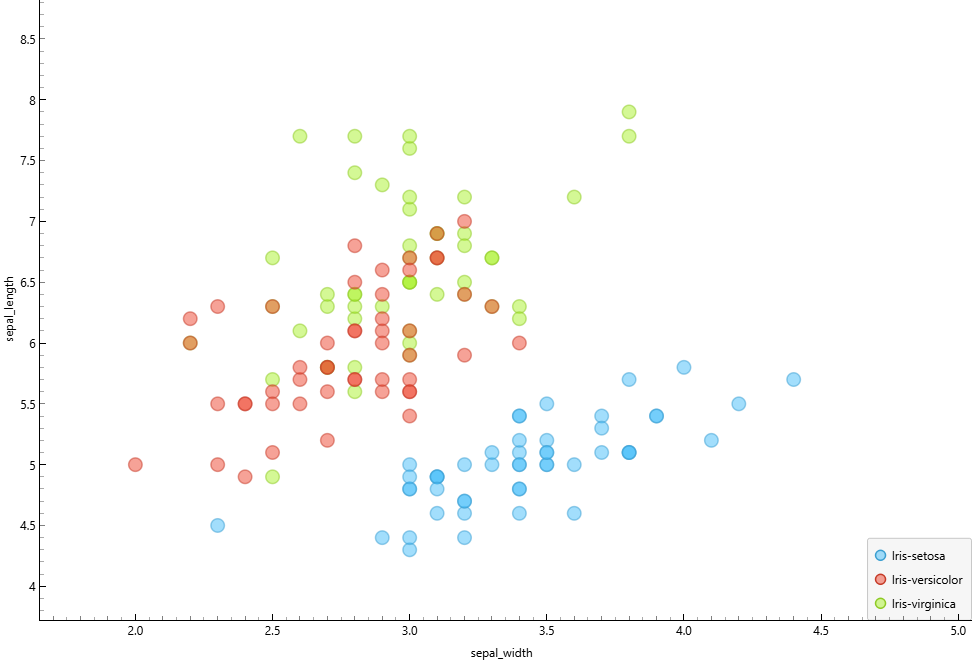

Pertemuan 2#
1. CRISP-DM Data Understanding#
CRISP-DM (Cross Industry Standard Process for Data Mining) adalah metodologi standar dalam data mining yang terdiri dari 6 tahap:
Business Understanding
Data Understanding
Data Preparation
Modeling
Evaluation
Deployment
Pada pertemuan ini difokuskan pada tahap Data Understanding.
2. Data Understanding#
Data Understanding bertujuan untuk memahami isi dan karakteristik dataset sebelum dilakukan analisis lanjutan atau modeling.
Tujuan:#
Memahami struktur data
Mengidentifikasi tipe data
Mengetahui kualitas data
Menganalisis hubungan antar variabel
3. Pentingnya Memahami Data#
Memahami data sangat penting sebelum melakukan modeling karena:
Menghindari kesalahan analisis
Mengetahui karakteristik variabel
Menentukan teknik yang tepat
Mengidentifikasi masalah kualitas data
4. Komponen Data Understanding#
Pengumpulan Data Awal
Deskripsi Data
Exploratory Data Analysis (EDA)
Evaluasi Kualitas Data
5. Types of Data#
5.1 Nominal (Kategorikal)#
Data tanpa urutan. Contoh: jenis kelamin, warna, spesies.
5.2 Ordinal#
Data memiliki tingkatan. Contoh: rendah, sedang, tinggi.
5.3 Biner#
Simetris → kedua nilai sama penting
Asimetris → salah satu nilai lebih penting
5.4 Numerik#
Interval Scale → tidak memiliki nol mutlak
Ratio Scale → memiliki nol mutlak
Nilai numerik dapat berupa:
Diskrit
Kontinu
6. Konsep Atribut dan Variabel#
Dalam data mining, kolom disebut:
Fitur
Atribut
Dimensi
Variabel
Independent Variable#
Variabel yang mempengaruhi.
Dependent Variable (Target)#
Variabel yang dipengaruhi.
Target tidak termasuk fitur dalam proses modeling.
7. Seleksi Fitur#
Seleksi fitur adalah proses menghapus fitur yang tidak berpengaruh terhadap target.
Tujuan:
Mengurangi dimensi
Mengurangi noise
Meningkatkan akurasi model
8. Korelasi#
Korelasi digunakan untuk mengukur hubungan antar variabel numerik.
Nilai korelasi:
Mendekati +1 → hubungan positif kuat
Mendekati -1 → hubungan negatif kuat
Mendekati 0 → tidak ada hubungan
9. Data Object#
Data object adalah representasi satu entitas dalam dataset.
Contoh pada dataset Iris:
Satu baris data = satu bunga Iris
Kolom = atribut dari bunga tersebut
ANALISIS DATASET IRIS#
Dataset yang digunakan adalah Iris Dataset dengan 150 data dan 5 kolom:
sepal_lengthsepal_widthpetal_lengthpetal_widthspecies
1. Import Library dan Membaca Dataset#
import pandas as pd
import matplotlib.pyplot as plt
df = pd.read_csv("iris.csv")
df.head()
1.1 Informasi Dataset#
Untuk melihat struktur dataset digunakan perintah berikut:
df.info()
Hasil output:
<class 'pandas.DataFrame'>
RangeIndex: 150 entries, 0 to 149
Data columns (total 5 columns):
# Column Non-Null Count Dtype
--- ------ -------------- -----
0 sepal_length 150 non-null float64
1 sepal_width 150 non-null float64
2 petal_length 150 non-null float64
3 petal_width 150 non-null float64
4 species 150 non-null str
dtypes: float64(4), str(1)
memory usage: 6.0 KB
Interpretasi:#
Dataset memiliki 150 data (entries).
Terdapat 5 kolom.
4 kolom bertipe numerik (
float64).1 kolom bertipe kategorikal (
str) yaituspecies.Tidak terdapat missing value (semua 150 non-null).
Ukuran memori dataset sekitar 6.0 KB.
Berdasarkan hasil tersebut, dataset dalam kondisi baik dan siap untuk tahap analisis lebih lanjut.
1.2 Distribusi Kelas (value_counts)#
Untuk melihat jumlah data pada setiap kelas digunakan perintah:
df["species"].value_counts()
Hasil output:
species
Iris-setosa 50
Iris-versicolor 50
Iris-virginica 50
Name: count, dtype: int64
Interpretasi:#
Iris-setosa berjumlah 50 data
Iris-versicolor berjumlah 50 data
Iris-virginica berjumlah 50 data
Dataset bersifat seimbang (balanced dataset) karena setiap kelas memiliki jumlah data yang sama.
Kondisi ini sangat baik untuk permasalahan klasifikasi karena tidak menyebabkan model lebih condong ke salah satu kelas.
1.3 Pemeriksaan Missing Value#
Untuk mengecek apakah terdapat data yang hilang digunakan perintah:
df.isnull().sum()
Hasil output:
sepal_length 0
sepal_width 0
petal_length 0
petal_width 0
species 0
dtype: int64
Interpretasi:#
Seluruh kolom memiliki nilai 0 missing value.
Tidak diperlukan proses data cleaning.
Dataset memiliki kualitas data yang sangat baik.
Dataset siap untuk tahap analisis statistik dan visualisasi.
2. Statistik Deskriptif#
2.1 Statistik Umum#
df.describe()
Digunakan untuk melihat ringkasan statistik seluruh kolom numerik.
2.2 Ringkasan Statistik per Fitur#
Fitur |
Karakteristik Umum |
Insight |
|---|---|---|
Sepal Length |
Rentang 4.3 – 7.9 |
Distribusi relatif simetris |
Sepal Width |
Variasi lebih kecil |
Tidak terlalu ekstrem |
Petal Length |
Variasi besar antar spesies |
Sangat potensial sebagai pembeda |
Petal Width |
Variasi sangat jelas |
Fitur paling kuat untuk klasifikasi |
Contoh melihat statistik satu kolom:
df["sepal_length"].describe()
2.3 Identifikasi Outlier#
Outlier dideteksi menggunakan metode IQR (Interquartile Range) dengan hanya mengambil kolom numerik.
df_numeric = df.select_dtypes(include=['float64'])
Q1 = df_numeric.quantile(0.25)
Q3 = df_numeric.quantile(0.75)
IQR = Q3 - Q1
outlier = ((df_numeric < (Q1 - 1.5 * IQR)) |
(df_numeric > (Q3 + 1.5 * IQR)))
outlier.sum()
Hasil output:
sepal_length 0
sepal_width 4
petal_length 0
petal_width 0
dtype: int64
Interpretasi:#
sepal_length→ tidak terdapat outliersepal_width→ terdapat 4 data yang terindikasi sebagai outlierpetal_length→ tidak terdapat outlierpetal_width→ tidak terdapat outlier
Outlier hanya ditemukan pada fitur sepal_width sebanyak 4 data.
Namun jumlah tersebut sangat kecil dibandingkan total 150 data, sehingga tidak memberikan dampak signifikan terhadap analisis secara keseluruhan.
Dataset masih dapat dianggap stabil dan layak digunakan untuk tahap analisis lanjutan.
3.1 Korelasi Semua Variabel#
df.corr(numeric_only=True)
3.2 Korelasi Antar Fitur#
df["petal_length"].corr(df["petal_width"])
df["sepal_length"].corr(df["sepal_width"])
3.3 Tabel Korelasi dan Interpretasi#
Variabel 1 |
Variabel 2 |
Nilai Korelasi |
Kekuatan Hubungan |
Interpretasi |
|---|---|---|---|---|
petal_length |
petal_width |
0.96 |
Sangat Kuat (Positif) |
Jika petal_length naik, petal_width ikut naik |
sepal_length |
sepal_width |
-0.12 |
Lemah (Negatif) |
Hubungan sangat lemah, hampir tidak signifikan |
sepal_length |
petal_length |
0.87 |
Kuat (Positif) |
Sepal panjang cenderung memiliki petal panjang |
sepal_length |
petal_width |
0.82 |
Kuat (Positif) |
Hubungan cukup kuat |
sepal_width |
petal_length |
-0.43 |
Sedang (Negatif) |
Hubungan terbalik |
sepal_width |
petal_width |
-0.37 |
Sedang (Negatif) |
Hubungan terbalik |
3.4 Validasi Korelasi Menggunakan Orange#
Untuk memastikan hasil perhitungan korelasi dari Python sudah benar, dilakukan validasi menggunakan software Orange Data Mining.
Tampilan Dataset di Orange#

Pada tampilan tersebut terlihat:
Dataset terdiri dari 150 data
Memiliki 4 fitur numerik
sepal_length
sepal_width
petal_length
petal_width
Memiliki 1 fitur kategori (class/target) yaitu
species
Hal ini sesuai dengan struktur dataset yang dibaca menggunakan Python.
Hasil Korelasi di Orange#

Berdasarkan hasil korelasi pada Orange diperoleh:
Peringkat |
Variabel 1 |
Variabel 2 |
Nilai Korelasi |
|---|---|---|---|
1 |
petal_length |
petal_width |
+0.963 |
2 |
petal_length |
sepal_length |
+0.872 |
3 |
petal_width |
sepal_length |
+0.818 |
4 |
petal_length |
sepal_width |
-0.421 |
5 |
petal_width |
sepal_width |
-0.357 |
6 |
sepal_length |
sepal_width |
-0.109 |
Interpretasi Visual Orange#
Warna hijau menunjukkan korelasi positif.
Warna biru menunjukkan korelasi negatif.
Semakin panjang batang, semakin kuat hubungan antar variabel.
3.5 Perbandingan Hasil Python dan Orange#
Jika dibandingkan dengan hasil perhitungan menggunakan Python:
Nilai korelasi hampir identik.
Perbedaan hanya pada pembulatan angka desimal.
Tidak terdapat perbedaan signifikan.
Hal ini menunjukkan bahwa:
Perhitungan korelasi sudah benar.
Dataset konsisten.
Tidak terdapat kesalahan dalam proses analisis.
3.6 Kesimpulan#
Berdasarkan analisis menggunakan dua tools (Python dan Orange), dapat disimpulkan:
petal_length dan petal_width merupakan pasangan variabel dengan korelasi paling kuat.
Fitur petal lebih dominan dalam membedakan spesies dibandingkan fitur sepal.
Fitur sepal_width cenderung memiliki korelasi negatif terhadap fitur petal.
Dataset Iris sangat cocok digunakan untuk permasalahan klasifikasi.
4. Visualisasi Scatter Plot#
plt.scatter(df["petal_length"], df["petal_width"])
plt.xlabel("Petal Length")
plt.ylabel("Petal Width")
plt.title("Scatter Plot Petal Length vs Petal Width")
plt.show()
Hasil Visualisasi#


Interpretasi Visualisasi#
Spesies Setosa terpisah sangat jelas.
Versicolor dan Virginica berdekatan tetapi masih dapat dibedakan.
Terlihat pola linear positif antara petal_length dan petal_width.
Insight Analisis#
Petal_length dan petal_width memiliki hubungan positif sangat kuat.
Kedua fitur tersebut efektif untuk klasifikasi spesies.
Fitur sepal kurang kuat dibanding fitur petal.
Dataset Iris merupakan permasalahan klasifikasi, karena target berupa kategori (species).
Kesimpulan Akhir#
Pada tahap Data Understanding:
Dataset memiliki kualitas baik (tidak ada nilai kosong).
Fitur petal merupakan fitur paling informatif.
Visualisasi dan korelasi mendukung bahwa dataset cocok untuk pemodelan klasifikasi.
Tahap Data Understanding menjadi fondasi penting sebelum memasuki tahap Data Preparation dan Modeling.